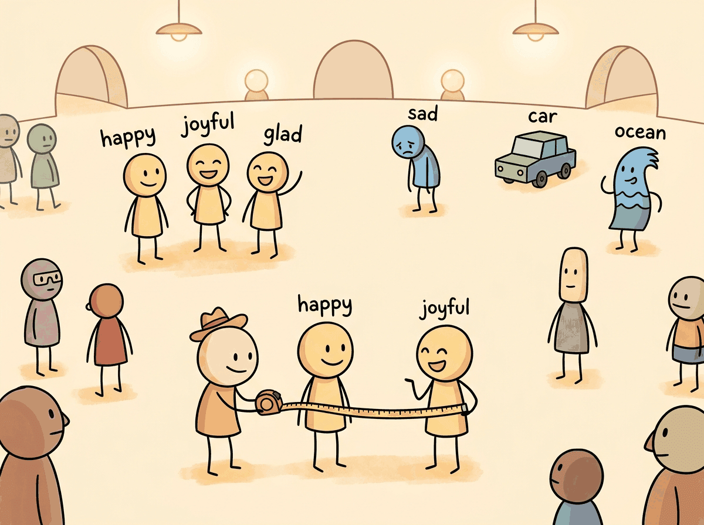
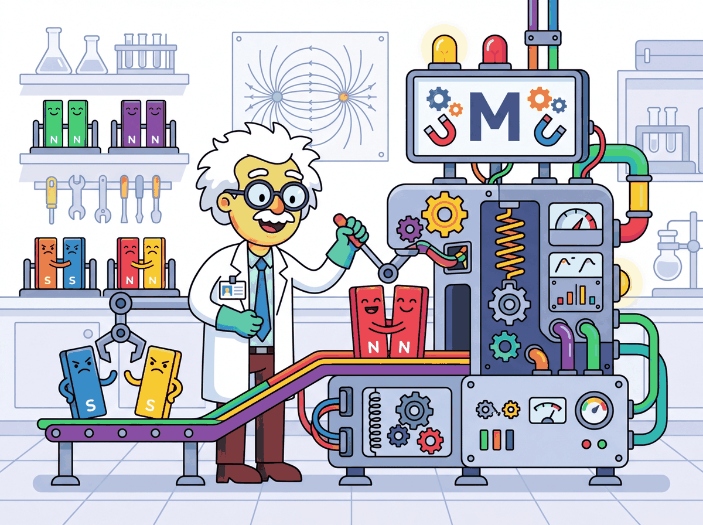

You shall know a word by the company it keeps.
Vec, Linguistically Social AI Agent
Embeddings are the bridge between human language and machine computation. Imagine searching through 10 million customer support tickets to find the one that matches a new complaint, not by keywords, but by meaning. Every semantic search system, every RAG pipeline, and every vector database depends on the quality of the embeddings that encode text as dense vectors. The choice of embedding model, its training procedure, and the similarity metric used to compare vectors together determine whether a retrieval system returns relevant results or noise. This half (31.1a) covers the classical lineage that every modern embedding model still inherits from: how dense sentence vectors evolved out of word embeddings, the bi-encoder vs. cross-encoder split, pooling strategies, and the contrastive training objective with hard-negative mining. The word embedding concepts from Section 1.2 evolved into the dense sentence representations covered here; Section 31.2 then surveys the modern architectures (Matryoshka, ColBERT, instruction-tuned encoders) and shows how to evaluate and fine-tune them.
Prerequisites
This section builds on the word embedding concepts introduced in Section 1.3, where we first explored dense vector representations of words. Familiarity with the transformer encoder architecture from Section 3.1 will help you understand how modern embedding models produce contextual representations. If you plan to fine-tune embeddings for your domain, the training fundamentals covered in Section 16.1 provide essential background on loss functions and optimization.

Contextual embeddings from transformer-based models like BERT resolved this ambiguity by producing different representations for the same word in different contexts. However, using BERT directly for sentence similarity proved problematic. Computing the similarity between two sentences required passing both through the model simultaneously (cross-encoding), making it computationally infeasible to search across millions of documents at query time.
The original Word2Vec paper showed that king - man + woman = queen, but less publicized is that it also learned Paris - France + Italy = Rome. Somewhere in 300 dimensions, a neural network independently rediscovered geography.
The progression from word embeddings to sentence embeddings is a concrete instance of the manifold hypothesis from topology and differential geometry. This hypothesis, articulated by researchers like Yoshua Bengio, holds that high-dimensional data (such as natural language sentences) actually occupies a much lower-dimensional manifold embedded within the high-dimensional space. Sentence embeddings attempt to learn a mapping from the discrete, combinatorial space of word sequences onto a continuous manifold where geometric proximity reflects semantic similarity. The remarkable success of this approach suggests that meaning, despite its apparent complexity, has a smooth, low-dimensional structure. This connects to results in cognitive science showing that human semantic memory also exhibits a geometric organization: concepts are arranged in a "semantic space" where distances predict reaction times in priming experiments (Shepard, 1987). Both biological and artificial systems appear to converge on geometric representations of meaning.
It is tempting to say that embeddings "capture the meaning" of a sentence. More precisely, they capture distributional patterns: sentences that appear in similar contexts end up with similar vectors. Two sentences can have high cosine similarity without being semantically equivalent (for example, "the patient was treated by the doctor" and "the doctor was treated by the patient" may embed similarly despite having opposite meanings). Embeddings encode co-occurrence patterns, not logical entailment. For tasks requiring precise semantic reasoning, retrieval based on embeddings should be followed by a re-ranking or verification step (covered in Section 35.1).
The Bi-Encoder Architecture
The key innovation that made large-scale semantic search practical was the bi-encoder architecture, introduced by Sentence-BERT (SBERT) in 2019. Instead of feeding two sentences into one model jointly, the bi-encoder processes each sentence independently through the same transformer encoder, producing a fixed-size vector for each. These vectors can be precomputed and stored in an index, enabling similarity search with a simple dot product or cosine similarity operation at query time. contrasts these two architectures side by side.
Pooling Strategies
When evaluating embedding models for your use case, start with mean pooling. It is the most forgiving choice because it aggregates signal from every token position. Switch to [CLS] pooling only if you are using a model specifically trained for it (such as certain BERT variants) and have validated that it outperforms mean pooling on your data.
A transformer encoder produces one vector per input token. To obtain a single sentence-level vector, a pooling operation aggregates these token vectors. The three common strategies are:
- [CLS] token pooling: Use the output vector corresponding to the special classification token. This works well when the model has been specifically trained with a classification objective.
- Mean pooling: Average all token output vectors (excluding padding). This is the default for most modern sentence transformers and tends to produce the most robust representations, because it aggregates signal from every token position. Important information may be concentrated in different parts of the sentence, and averaging ensures none of it is lost. By contrast, the [CLS] token must compress the entire sentence into a single position during pretraining data, which may not happen effectively without explicit training for that purpose.
- Max pooling: Take the element-wise maximum across all token vectors. This can capture salient features but is less commonly used in practice.
# Encode three sentences with all-MiniLM-L6-v2 (a 384-dim mean-pooled model)
# and inspect pairwise cosine similarity for paraphrase vs. unrelated pairs.
from itertools import combinations
from sentence_transformers import SentenceTransformer
model = SentenceTransformer("sentence-transformers/all-MiniLM-L6-v2")
sentences = [
"The cat sat on the mat.",
"A feline rested on the rug.", # paraphrase of sentence 0
"Stock prices rose sharply today.", # unrelated topic
]
# `normalize_embeddings=True` puts vectors on the unit sphere, so dot product == cosine.
embeddings = model.encode(sentences, normalize_embeddings=True)
print(f"Embedding shape: {embeddings.shape} (n_sentences, embed_dim)")
similarity = embeddings @ embeddings.T
for i, j in combinations(range(len(sentences)), 2):
print(
f"sim('{sentences[i][:30]}...', "
f"'{sentences[j][:30]}...'): {similarity[i, j]:.4f}"
)The sentence-transformers package (Reimers and Gurevych, maintained by Hugging Face since 2024) is the default Python interface to every modern open-weight embedding model: BGE-M3, E5-Mistral, Nomic-Embed-v2, GTE, mxbai, NV-Embed-v2, Qwen3-Embedding, Stella, and the original SBERT family. One encode() call handles batching, GPU offload, L2 normalization, and (since v3.0) Matryoshka dimension truncation. For hosted alternatives where higher MTEB scores or multilingual coverage dominate (Voyage 3, Cohere Embed-4, gemini-embedding-001), drop into the vendor SDK instead. Reach for sentence-transformers before writing a tokenizer-plus-AutoModel loop yourself.
Show code
pip install -U sentence-transformers
from sentence_transformers import SentenceTransformer
model = SentenceTransformer("BAAI/bge-m3", device="cuda")
embeddings = model.encode(
["The cat sat on the mat.", "A feline rested on the rug."],
normalize_embeddings=True,
batch_size=64,
)
# embeddings.shape == (2, 1024); cosine = embeddings @ embeddings.Tencode() call covers 90% of embedding work.31.1.2 Training Embedding Models: Contrastive Learning
For why embeddings concentrate in a thin shell of high-dimensional space (concentration of measure) and what that means for cosine similarity in practice, see Section 10.1: Attention Analysis & Probing.
There is a geometric reason cosine similarity can mislead in high dimensions: concentration of measure. In d-dim space, randomly drawn unit vectors have pairwise cosine similarities concentrating tightly around zero, std dev ≈ 1/√d. In 768-dim BERT, std dev ≈ 0.036. The similarity between a query and a completely irrelevant document may differ from the similarity to the most relevant document by only 0.1-0.3 units. Small differences become significant decisions. Concentration also explains why approximate-nearest-neighbor algorithms can skip large fractions of the search space and still achieve 95%+ recall: if most vectors have similar similarity scores, the true nearest and second-nearest are often nearly interchangeable. Calibrate similarity thresholds empirically on YOUR embedding model and corpus, do not borrow them across domains.

Concentration of measure is the high-dimensional version of "everyone in this Zoom meeting looks vaguely similar". In 768-dim space, random unit vectors have cosine similarities clustering tightly around zero with a standard deviation of about 0.036, which means a "very relevant" document might score 0.42 and a "completely unrelated" document scores 0.31, and the gap between brilliant and irrelevant is just 0.11. This is also why "use cosine similarity above 0.7" advice from a 2018 blog post will quietly destroy your RAG system in 2026: thresholds depend on the embedding model, not on intuition.
31.1.1 From Words to Sentences: The Embedding Evolution
In Section 1.3, we explored how words can be represented as dense vectors and how similarity metrics capture semantic relationships. This section builds on that foundation by showing how modern embedding models extend those ideas from individual words to entire sentences and paragraphs, enabling the large-scale semantic search that powers RAG systems.
The journey from word-level to sentence-level embeddings represents one of the most consequential
progressions in NLP. Early approaches like Word2Vec and GloVe learned to map individual words into
dense vectors where geometric relationships encoded semantic relationships. The classic example of
king - man + woman ≈ queen demonstrated that these vector spaces captured meaningful
analogies, but word embeddings suffered from a fundamental limitation: they assigned a single vector
to each word regardless of context.

Modern embedding models are trained using contrastive learning, a framework where the model learns to pull similar (positive) pairs together and push dissimilar (negative) pairs apart in the embedding space. The quality of the training data, the choice of loss function, and the strategy for selecting hard negatives together determine the final embedding quality.
Loss Functions
Contrastive learning has several standard loss formulations. The two that dominate modern embedding training are Multiple Negatives Ranking Loss and Triplet Loss, with hard negative mining as a critical orthogonal technique that boosts both.
Multiple Negatives Ranking Loss (MNRL)
The most widely used loss function for embedding training is Multiple Negatives Ranking Loss (also called InfoNCE). Given a batch of N positive pairs (query, positive_passage), the loss treats the other N-1 passages in the batch as negatives for each query. This "in-batch negatives" approach is highly efficient because it provides N-1 negatives for free, without requiring explicit negative sampling.
Written out, for a query embedding $q$, its positive document $d^{+}$, and in-batch negatives $d^{-}_j$, the InfoNCE loss is
This is the cross-entropy of a softmax over similarities: retrieving the correct document is treated as a classification problem against the negatives. The temperature $\tau$ sharpens ($\tau \to 0$) or softens the distribution; a small $\tau$ forces the positive's similarity far above the negatives' but makes training more sensitive to hard negatives.
# Simplified InfoNCE / Multiple Negatives Ranking Loss
import torch
import torch.nn.functional as F
def multiple_negatives_ranking_loss(query_emb, passage_emb, temperature=0.05):
"""
query_emb: (batch_size, embed_dim) - query embeddings
passage_emb: (batch_size, embed_dim) - positive passage embeddings
Each query_emb[i] pairs with passage_emb[i] (positive).
All other passages in the batch serve as negatives.
"""
# Compute similarity matrix: (batch_size, batch_size)
similarity = torch.matmul(query_emb, passage_emb.T) / temperature
# Labels: diagonal entries are the positives
labels = torch.arange(similarity.size(0), device=similarity.device)
# Cross-entropy loss treats this as N-way classification
loss = F.cross_entropy(similarity, labels)
return loss
# Example: batch of 4 query-passage pairs
batch_size, dim = 4, 384
queries = F.normalize(torch.randn(batch_size, dim), dim=-1)
passages = F.normalize(torch.randn(batch_size, dim), dim=-1)
loss = multiple_negatives_ranking_loss(queries, passages)
print(f"MNRL Loss: {loss.item():.4f}")Triplet Loss and Other Objectives
Earlier approaches used triplet loss, which operates on (anchor, positive, negative) triples and enforces a margin between the positive and negative distances. While simpler conceptually, triplet loss is less sample-efficient than MNRL because it uses only one negative per anchor. Other loss variants include cosine similarity loss for regression-style training on continuous similarity scores, and distillation losses that transfer knowledge from a cross-encoder teacher to a bi-encoder student.
Hard Negative Mining
The choice of negative examples profoundly impacts embedding quality. Random negatives are typically too easy for the model to distinguish, providing little learning signal. Hard negatives are passages that are superficially similar to the query but are not actually relevant. They force the model to learn fine-grained distinctions.
Common approaches for mining hard negatives include: (1) BM25 negatives, where you retrieve the top BM25 results that are not labeled as positive; (2) model-mined negatives, where you use a previous version of the embedding model to find near-miss passages; and (3) cross-encoder reranking, where a cross-encoder scores candidates and borderline cases become hard negatives. The most effective pipelines combine multiple strategies, starting with BM25 negatives for initial training and then mining harder negatives with the trained model for further fine-tuning rounds.
# Hard negative mining: find passages that look relevant to a query but are not
# labeled as positive. Training on these tightens the model's decision boundary.
from sentence_transformers import SentenceTransformer
import numpy as np
def mine_hard_negatives(
model: SentenceTransformer,
queries: list[str],
corpus: list[str],
positives_map: dict[int, set[int]],
top_k: int = 30,
num_negatives: int = 5,
) -> dict[int, list[int]]:
"""For each query, return the top-k most similar non-positive corpus indices."""
query_embs = model.encode(queries, normalize_embeddings=True)
corpus_embs = model.encode(corpus, normalize_embeddings=True)
hard_negatives = {}
for q_idx, q_emb in enumerate(query_embs):
# Cosine since embeddings are L2-normalized: dot product == cosine.
sims = corpus_embs @ q_emb
top_indices = np.argsort(sims)[::-1][:top_k]
# Drop the labeled positives so what remains is "looks similar but is wrong".
positives = positives_map.get(q_idx, set())
neg_indices = [int(i) for i in top_indices if int(i) not in positives]
hard_negatives[q_idx] = neg_indices[:num_negatives]
return hard_negatives
# Example usage
model = SentenceTransformer("sentence-transformers/all-MiniLM-L6-v2")
queries = ["What causes diabetes?", "How does photosynthesis work?"]
corpus = [
"Diabetes is caused by insulin resistance or insufficient insulin production.",
"Type 2 diabetes risk factors include obesity and sedentary lifestyle.",
"Photosynthesis converts sunlight into chemical energy in plants.",
"The Calvin cycle fixes carbon dioxide into glucose molecules.",
"Machine learning models require large datasets for training.",
]
positives_map = {0: {0, 1}, 1: {2, 3}}
negatives = mine_hard_negatives(model, queries, corpus, positives_map)
print("Hard negatives for each query:")
for q_idx, neg_ids in negatives.items():
print(f" Query: '{queries[q_idx]}'")
for nid in neg_ids:
print(f" Negative: '{corpus[nid][:60]}...'")What Comes Next
In the next section, Section 31.2: Modern Embedding Architectures & Selection, we pick up from contrastive training and explore Matryoshka representation learning, ColBERT late interaction, the 2024-26 embedding-model ecosystem, MTEB-based selection, fine-tuning for domain specificity, and the practical considerations that decide which model ships.